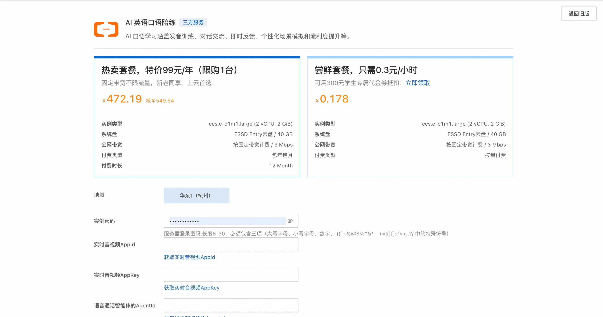
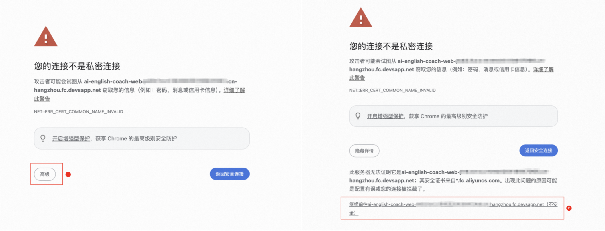
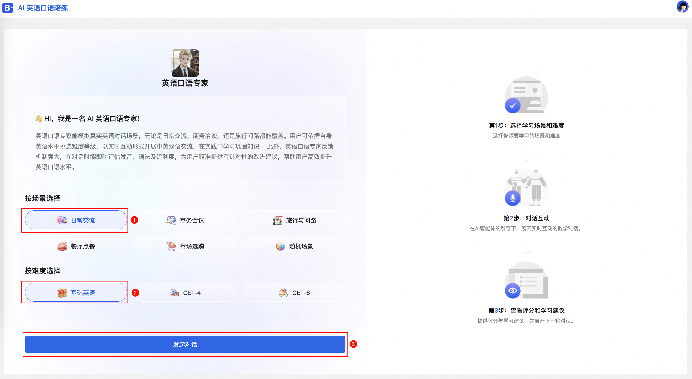

简介
AI 陪练，作为智能化的专属训练伙伴，能够提供实时反馈与精准指导，助力用户高效提升技能。本方案以英语口语教学和企业内部培训为应用场景，依托大模型技术，通过模拟真实对话场景，支持文本及语音交互，实现个性化学习与即时反馈，为用户打造沉浸式的学习体验。
计费说明
本服务在阿里云上的费用主要涉及：
- 所选GPU云服务器的规格
- 磁盘容量
- 公网带宽
计费方式：按量付费（小时）或包年包月 预估费用在创建实例时可实时看到。
RAM账号所需权限
| 权限策略名称 | 备注 |
|---|---|
| AliyunECSFullAccess | 管理云服务器服务（ECS）的权限 |
| AliyunVPCFullAccess | 管理专有网络（VPC）的权限 |
| AliyunROSFullAccess | 管理资源编排服务（ROS）的权限 |
| AliyunComputeNestUserFullAccess | 管理计算巢服务（ComputeNest）的用户侧权限 |
前置准备
⚠️ 重要：请先完成以下准备工作
- 参考解决方案文档创建：
- 实时音视频通信应用
- 实时工作流
-
AI智能体
-
获取必要参数：
- 实时音视频 AppId
- 实时音视频 AppKey
-
语音通话智能体 AgentId
-
地域要求：所有资源必须创建在杭州地域
部署服务
-
单击部署链接 ，进入服务实例部署界面，根据界面提示，填写参数。 
-
确认订单完成后点击立即创建，等待部署完成后进入服务实例详情。
-
单击公网访问地址，在浏览器中，会自动跳转为 HTTPS 链接地址。提示安全证书警告或错误，可以选择点击高级选项，然后点击继续前往以访问该网站。 
-
选择您想要学习的场景和难度，开始对话互动。 
-
在每轮对话过程中，AI助手将根据您当前的回答提供评分，并给出针对性的学习建议，帮助您不断提升，期间可以使用Tab 键进行打断。
说明:浏览器弹窗请求使用麦克风，点击访问该网站时允许。
<img alt="Description" src="use_2.png" width="400"/>

© 2009-2022 Aliyun.com 版权所有